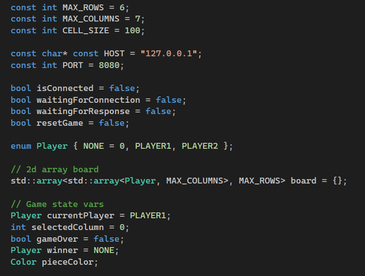
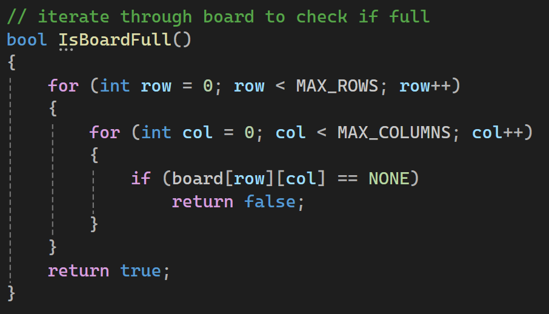
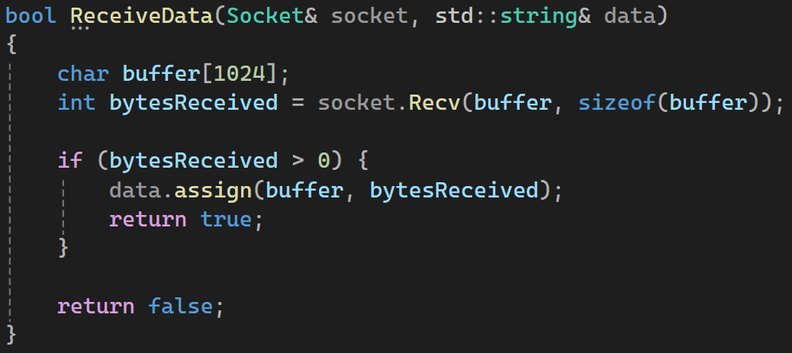
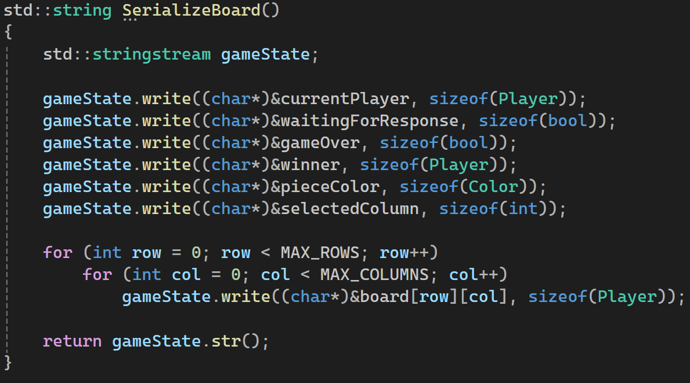
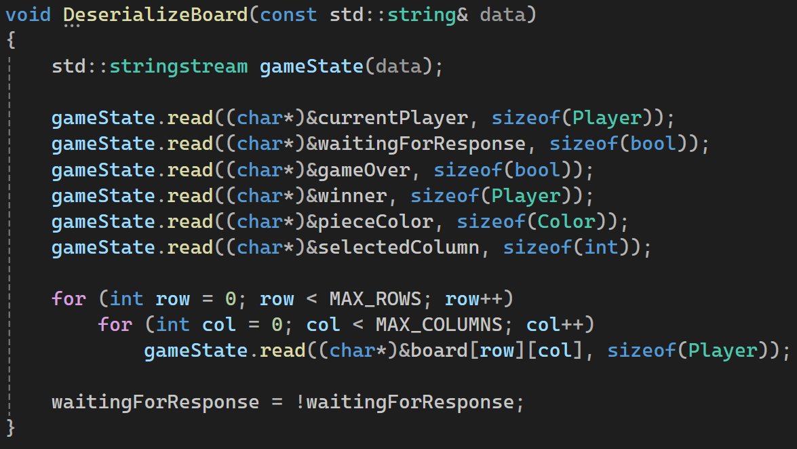
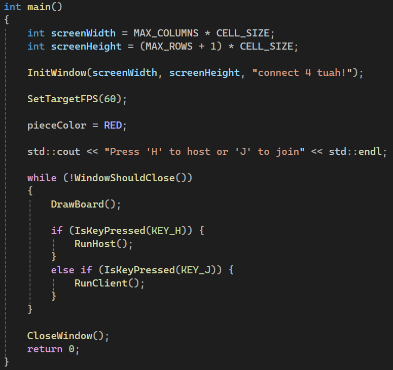
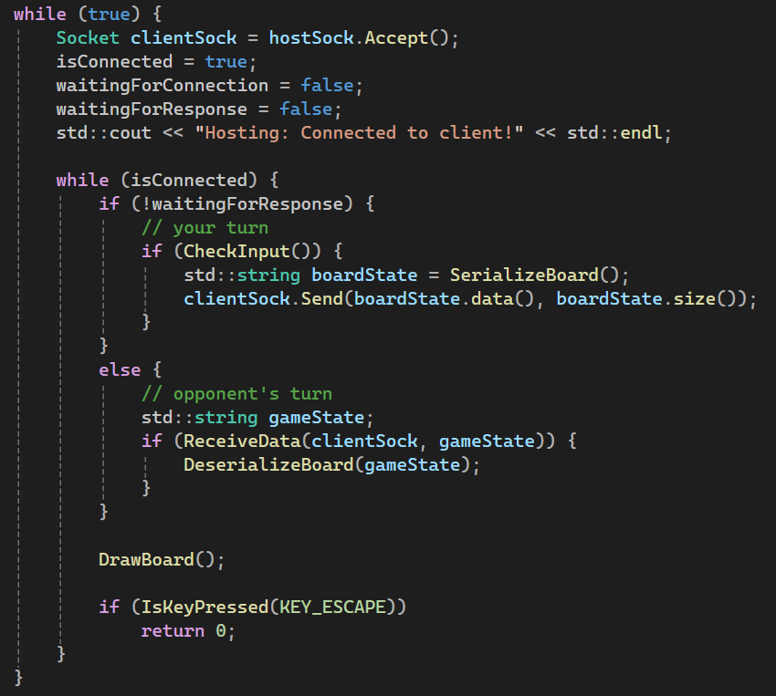

Networked Connect 4
The goal of this project is to allow two players to play Connect Four over a network, where one user hosts the game and another joins. Each player can interact with the game board through keyboard input, and turns are synchronized between clients using custom networking logic. This project demonstrates key concepts in graphics programming, basic input handling, and client-server networking.
Setting Up the Core Components
At the top of the program, we define several constants and global variables that control the game’s behavior.
These include the number of rows and columns on the board, the size of each cell (in pixels), and the IP
address and port used for network communication. The game board itself is represented by a 2D array of
Player enums, which can be either NONE, PLAYER1, or PLAYER2.
These enum values are used to track the state of each cell on the board.
Additional flags like isConnected, waitingForConnection,
waitingForResponse, and resetGame help manage the overall flow of the game and ensure
proper sequencing of turns. The current player and their selected column are tracked using dedicated variables,
and the UI updates dynamically based on these states. There are also color variables and winner status flags used
to render the correct visuals and end-game messages.

Game Logic
The first major function is DropPiece(int col, Player player), which attempts to drop a game piece
into the selected column. This function starts from the bottom of the column and works upward, checking each cell
for an empty space. Once it finds an empty spot, it places the player’s piece there and returns true.
If the column is already full, it returns false.

After each move, the program checks for a win using the CheckWin(Player player) function. This function
looks in all four directions—horizontal, vertical, and both diagonals—to find four consecutive cells containing the
current player's pieces. If such a pattern is detected, the game ends with that player declared the winner. If not,
and the board is full, the game ends in a draw. Otherwise, the function simply switches turns to the next player and
updates the UI accordingly.

To determine if the board is full, the IsBoardFull() function loops through each cell, returning
false immediately if it finds an empty one. If the loop completes without finding any empty cells, the
function returns true, signaling a draw.

Input is handled in CheckInput(), which listens for arrow keys to move the column selector, and for
the space or enter key to drop a piece. If the game is over, pressing the ‘R’ key resets the board. The function
returns true if any meaningful input is received, which helps synchronize state across the network.
Rendering the Game Board
The DrawBoard() function is responsible for rendering the entire game screen. It starts by drawing
messages to guide the user based on whether they are hosting or joining a game. If the game is not yet connected,
the screen prompts the user to press either ‘H’ or ‘J’ to host or join, respectively. If a connection is being
established, it displays a “Waiting…” message.

When the game is in progress, the selected column is highlighted with an arrow and a preview of the piece that will be placed if the player acts. The function then iterates through the entire game board and draws a colored circle in each cell based on the occupying player. Finally, the UI displays win or draw messages as appropriate, along with prompts to reset the game.
Handling Networking
To enable multiplayer functionality, we need to send and receive the game state over the network. This is where
Socklib comes in. The ReceiveData(Socket& socket, std::string& data) function reads data from the
socket and stores it in a string, which can later be used to update the game state. This function returns
true if any data is received, ensuring the game can continue when a response arrives from the other player.

The entire game state is serialized into a string using the SerializeBoard() function. This includes
the current player, turn flags, column selection, piece color, and the complete board layout. We use
std::stringstream to construct this string, which can easily be sent over the network.

On the receiving end, DeserializeBoard(const std::string& data) parses the string back into its original
components and updates the game state accordingly. This ensures both players remain synchronized and see the same board
at all times. We also set a flag here to indicate that it’s now the other player’s turn to act.

Game Initialization
The main() function initializes the Raylib window with dimensions calculated from the board size and
cell size. It sets the target FPS for a consistent experience and displays an initial prompt for the user to choose
whether to host or join a game. Based on this input, the program calls either RunHost() or
RunClient() and begins the game loop.

Running as Host or Client
Depending on the user’s choice at the start of the game, the program enters either RunHost() or
RunClient(). If the user chooses to host, RunHost() initializes the socket library, binds
to a port, and listens for incoming connections. Once a client connects, the game begins, with the host assigned as
PLAYER1. The host sends the initial game state, and then both sides alternate turns, sending and
receiving serialized board states.

If the user chooses to join, RunClient() attempts to connect to the host using the IP and port defined
earlier. Once connected, the client becomes PLAYER2 and waits to receive the game state before taking
any actions. Each player can only act on their turn, as enforced by the waitingForResponse flag. This
helps prevent race conditions and ensures the game remains in sync.
What I Learned
This project showcases how to build a complete networked game in C++ using Raylib and Socklib. By combining 2D rendering, user input, and network synchronization, we created a fully playable version of Connect Four. This is a solid foundation that can be expanded into more complex multiplayer games or adapted for other genres.
Networking was intentionally kept minimal using Socklib, focusing on transmitting the entire game state as a string. This avoids the complexity of managing multiple types of messages and simplifies the synchronization process. The use of serialization ensures that the game remains turn-based and avoids mid-turn conflicts.